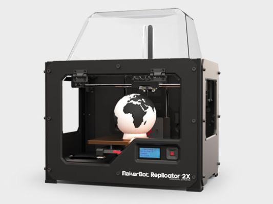

Faculty

3D printing is an educational technology that is valuable across multiple disciplines. The Rebecca Crown Library staff is here to assist faculty with incorporating 3D printing into their courses. A librarian can work with you to create an assignment or simply provide you students with an instruction session in the 3D lab.
"Biomedical -- facial reconstruction, foot reconstruction, dental models, anatomical modelling
Engineering -- gears, structural models
Theatre -- scale models of proposed sets and set pieces
Art and design -- original work, reproductions and replicas
Geography -- 3D maps, terrain visualizations"
From SIU website

Manuals
There are serveral online manuals and tutorials for Faculty to review.
Faculty are encouraged to set-up a one-on-one instruction session in the 3D lab to get familiar with the equipment and processess.
A Design Consultation with the Instructional Design team will help you review your learning objectives and course content to find an appropriate project for your students.
Learn more on the FAQ page
Here are some current projects from courses offered in Spring Semester.
You can speak with a library liaison for your department who can help you work with the instructional design team for a Design Consultation. As a team we can work together to create a project that meets the learning objectives of your course. 3D printing is an exciting way to incorporate emerging technology into you class.
More info